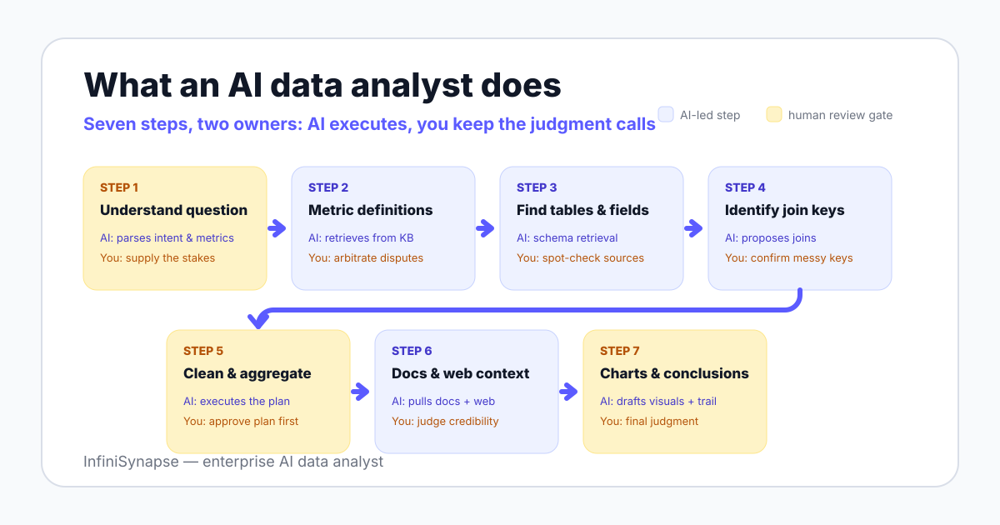

The software sense sits inside the agent paradigm that Anthropic's Building Effective Agents describes: systems where the model directs its own process and tool usage instead of following a fixed script. Two 2025 academic surveys — LLM/Agent-as-Data-Analyst and A Survey of Data Agents — now treat this as a distinct research category.
Searchers use this phrase for two different things, and most pages answer only one. You should know which question you are asking before you compare vendors or write a job post.
An agent that does analyst work: it connects to your databases and files, retrieves your metric definitions, plans an analysis, executes it, and explains the result. This is the sense vendors mean, and it is the main subject of this page.
It is a sibling of the broader data agent category, specialized for analysis rather than general data operations.
An analyst whose job now includes supervising AI systems: curating the context they read, reviewing their plans, and verifying their outputs. The deliverable shifts from hand-written queries to quality-controlled, AI-assisted analysis.
If you are hiring for this role, our AI data analyst job description guide includes a copyable JD template, a skills matrix, and ten interview questions.
The two senses converge in practice: the software only works well when a human in the second sense supervises it. Keep that pairing in mind as you read the task map below.
Real analysis work was never just writing SQL. When a competent analyst answers a business question, the work breaks into seven steps — and an AI data analyst must cover the same seven, not just the query in the middle.
| Step | What the AI does | What stays human |
|---|---|---|
| 1. Understand the business question | Parses intent, asks clarifying questions, maps the request to known metrics and past cases | Deciding the question is worth answering; supplying the business stakes behind it |
| 2. Determine metric definitions | Retrieves definitions from a knowledge base of data dictionaries, metric definitions, and analysis playbooks | Resolving definition disputes; approving any new or changed metric definition |
| 3. Locate tables and fields | Runs schema retrieval across connected sources and ranks candidate tables | Spot-checking that the right system of record was chosen |
| 4. Identify relationships across systems | Proposes join keys across sources — for example, phone number across two e-commerce platforms | Confirming join logic where keys are messy, duplicated, or sensitive |
| 5. Clean, join, and aggregate | Executes the plan across databases and files through a multi-source execution layer | Reviewing the plan before execution on high-stakes runs |
| 6. Consult documents and external context | Pulls knowledge-base documents and web search results into the analysis | Judging source credibility for contested or external claims |
| 7. Produce charts, conclusions, recommendations | Drafts visuals, summaries, and an evidence trail for every number | Final judgment, narrative framing, and the decision itself |

In InfiniSynapse, steps 1, 2, and 6 run on a self-developed LLM-Native RAG layer: business knowledge recall plus schema recall over a knowledge base of data dictionaries, metric definitions, analysis playbooks, and past cases. Steps 3 to 5 run through InfiniSQL, an LLM-optimized intermediate representation that connects to a multi-source execution layer.
Plan mode keeps the human column real rather than decorative: the agent drafts the full analysis plan, you review and adjust it, and only then does it execute. The ReAct line of research (2022) showed why this structure matters — interleaving reasoning steps with actions measurably reduces error versus one-shot generation.
A tool that only writes SQL automates one step out of seven. The other six are why analysis takes days.
Abstract task maps hide the texture of the work, so here are five scenarios drawn from documented InfiniSynapse capabilities. Each one shows which steps the agent runs and where you stay in the loop.
Yesterday's revenue lands below trend, and the first question of the day is why. You ask the agent to break the dip down by region, channel, and product line, and it drafts a plan you approve in one glance.
Minutes later you have the decomposition with an evidence trail attached — which queries ran, against which tables, under which metric definitions. The judgment call about whether the cause is a promotion ending or a tracking bug stays yours, and the trail is what makes that call reviewable, as we argue in explainable AI data analysis.
A documented InfiniSynapse demo task: using phone number as the key, rank the highest-spending customers across JD and Tmall platform data, then match their real names from a CSV file and chart the result. That is two platform databases plus a file in one question.
The agent proposes the phone-number join, executes across all three sources without an ETL migration, and verifies the join produced plausible row counts. The traditional route — migrate everything into one warehouse first — is measured in days rather than minutes.
Support exports a table of customer comments, and the owner wants to know what changed this month. The agent runs language-model analysis over the comment column — sentiment and theme classification on text fields is a demonstrated capability, not a roadmap item — and joins the labels back to order data.
You get a structured answer to an unstructured question: which complaint themes grew, and whether they correlate with a product change. The human step is deciding what to do about it.
Pricing asks for current competitor prices on twenty products. Through Browser Use — a Chrome extension for data collection, page extraction, and multi-step web workflows — the agent collects the listed prices into a table you can join against your own catalog.
Web data is the lowest-trust input in the stack, so you review the extracted table before anyone prices against it. The agent gathers; you vouch.
End of week, the recurring revenue pack is due. Through the Agent Tool Market, the agent assembles the analysis into an Excel workbook and a PPT deck — spreadsheet editing, document generation, and file conversion are tools the agent can call, not separate manual jobs.
Your role compresses to review and sign-off. The hours that used to go into assembling the deck go into the commentary that actually gets read.
The 2025 survey pointedly subtitled "Emerging Paradigm or Overstated Hype?" exists because vendors routinely oversell this category. Here is the honest boundary, including for our own product.
The garbage-in point deserves emphasis: if two departments define "active user" differently and nobody has written the canonical version down, the agent will compute one of them confidently. Fixing that is knowledge-base work, covered in data agent memory explained, and it is a precondition rather than a feature.
Apply the same skepticism to roadmaps, ours included. InfiniSynapse demonstrates structured-data analysis plus language-model analysis of text fields today; voice and video interfaces are a stated vision, not a current capability.
Four other tool categories get marketed with overlapping language. The table separates them by what each one is, where it genuinely wins, and where it loses to an AI data analyst.
| Tool | What it is | Where it wins | Where it loses |
|---|---|---|---|
| ChatBI | A conversational layer over metrics already modeled in a BI semantic layer | Fast, safe answers on pre-modeled metrics | Fails outside the semantic layer; no cross-source or open-ended analysis |
| Analytics copilot | A suggestion layer embedded in a host tool, such as Microsoft 365 Copilot | Drafting and summarizing inside software you already use | You still execute and verify everything; scope ends at the host app |
| NLP2SQL | A generator that turns a question into one query against one source | Narrow, single-source query tasks | One-shot generation with no context or verification — the exact gap BIRD measures |
| BI dashboard | Pre-built visuals refreshed on a schedule | Daily monitoring of known metrics; cheapest per view at scale | Cannot answer a new question without a build cycle |
The copilot comparison is the one buyers most often get wrong, because the marketing language is nearly identical; the full treatment is in data agent vs AI copilot. The category-level shift away from dashboards is covered in agentic analytics explained.
Analyst firms track this convergence under the Gartner augmented analytics umbrella, which is useful for shortlisting but too broad to distinguish agents from copilots. Use workflow ownership as the dividing question: who runs the analysis, and who shows the evidence.
The successful pilots we see follow the same four-step path. Each step has a verifiable exit condition, so you know when to proceed.
If you only need a fixed dashboard, have no connected sources, or have not assigned metric ownership, start with classic BI or a governance effort instead. An AI data analyst amplifies the data foundation you already have — including its problems.
Connect a database or upload a CSV, ask one cross-source question, and review the plan, the result, and the evidence trail. One graded run on your real data beats any feature comparison — including this page.
Try InfiniSynapse onlineLast updated: 2026-06-12 · Next scheduled review: 2026-09-12
The task map and scenarios are grounded in published agent research (ReAct, the 2025 data agent surveys), public benchmarks (BIRD), labor-market outlook data (US BLS, cited qualitatively), governance frameworks (NIST AI RMF), and vendor documentation. Capabilities attributed to InfiniSynapse come from InfiniSynapse product documentation; the cross-source ranking scenario is a documented product demonstration, not an independent benchmark.
Conflict of interest: InfiniSynapse publishes this guide and sells in this category. To reduce bias, the page includes an honest-limits section, explicit cases where simpler tools win, and external sources for every numeric claim.
Update cadence: Reviewed every 90 days for terminology, source links, benchmark figures, and schema consistency.